O Mangá de JoJo no Kimyou na Bouken
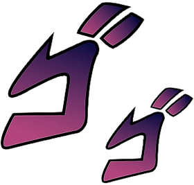
O mangá de JoJo no Kimyou na Bouken (JoJo's Bizarre Adventure) é uma obra criada por Hirohiko Araki e publicada desde 1987. A história acompanha diferentes gerações da família Joestar, com cada parte apresentando novos protagonistas, cenários e conflitos, mas mantendo a conexão entre seus personagens e acontecimentos.
Atualmente, o mangá é dividido em nove partes: Phantom Blood, Battle Tendency, Stardust Crusaders, Diamond is Unbreakable, Golden Wind, Stone Ocean, Steel Ball Run, JoJolion e The JOJOLands. Ao longo dessas histórias, Araki construiu um universo marcado por batalhas estratégicas, habilidades únicas, personagens memoráveis e uma constante evolução artística.
Considerado um dos mangás mais influentes e duradouros da indústria japonesa, JoJo no Kimyou na Bouken destaca-se por sua originalidade e capacidade de se reinventar a cada nova parte, conquistando leitores de diferentes gerações e permanecendo relevante mesmo após décadas de publicação.
As partes do Mangá
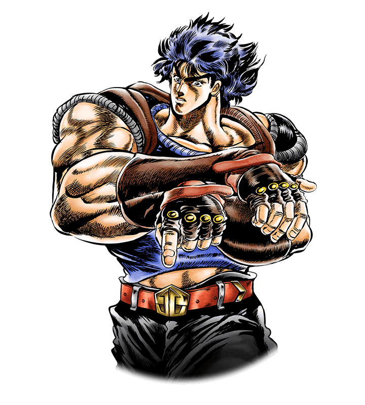
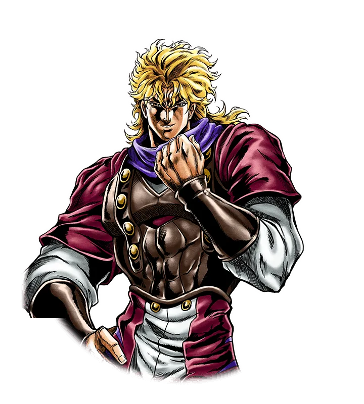
Parte 1: Phantom Blood
Phantom Blood é a primeira parte de JoJo no Kimyou na Bouken e conta a história de Jonathan Joestar, herdeiro de uma família aristocrática inglesa, e Dio Brando, um jovem adotado pelos Joestar após a morte de seu pai. Desde o primeiro encontro, os dois desenvolvem uma intensa rivalidade, motivada pela ambição de Dio de tomar para si a fortuna e o prestígio da família Joestar.
Ao longo da trama, Dio utiliza a Máscara de Pedra, um antigo artefato que o transforma em um vampiro com habilidades sobre-humanas. Para enfrentá-lo, Jonathan aprende a técnica do Hamon, uma forma wspecial de energia utilizada para combater criaturas sobrenaturais. A história acompanha o confronto entre os dois, estabelecendo as origens do conflito que influenciará as futuras gerações da família Joestar.
Publicada entre 1987 e 1988, Phantom Blood introduz os principais elementos do universo de JoJo's Bizarre Adventure, servindo como ponto de partida para toda a série.
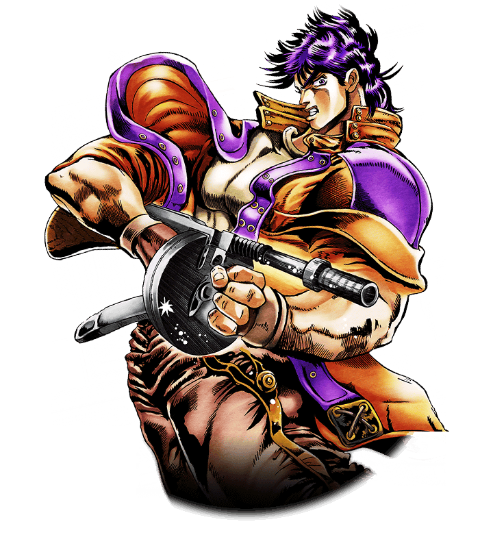
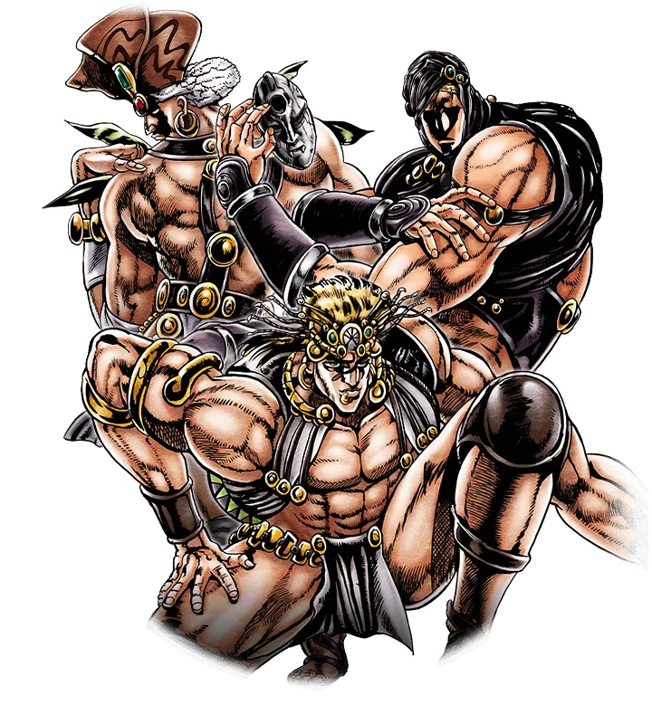
Parte 2: Battle Tendency
Battle Tendency é a segunda parte de JoJo no Kimyou na Bouken e se passa várias décadas após os acontecimentos de Phantom Blood. A história acompanha Joseph Joestar, neto de Jonathan Joestar, um jovem inteligente, irreverente e talentoso no uso do Hamon.
A trama gira em torno do surgimento dos Homens do Pilar, uma antiga raça de seres extremamente poderosos que despertam após séculos de sono. Entre eles estão Kars, Esidisi e Wamuu, indivíduos que possuem habilidades muito superiores às dos vampiros enfrentados na parte anterior. Para impedir seus planos, Joseph une forças com aliados como Caesar Zeppeli e Lisa Lisa, enfrentando uma série de batalhas que exigem estratégia, criatividade e domínio do Hamon.
Publicada entre 1988 e 1989, Battle Tendency amplia o universo da obra ao introduzir novos personagens, desafios mais complexos e um protagonista com uma personalidade bastante diferente de Jonathan, consolidando a identidade única de JoJo's Bizarre Adventure.
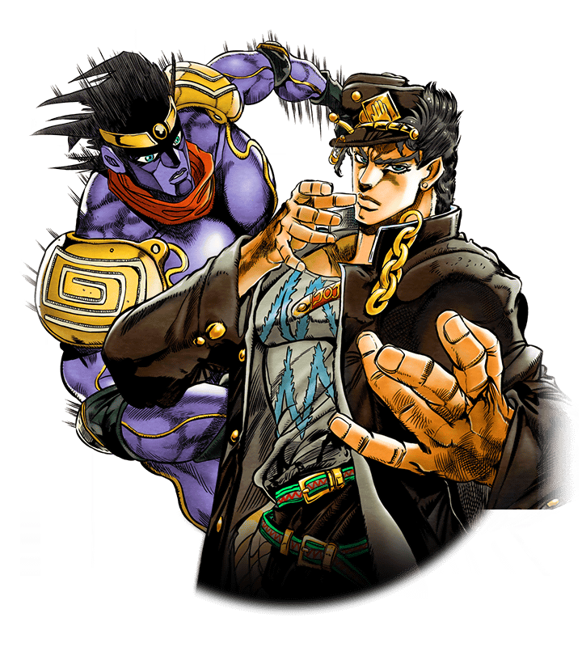
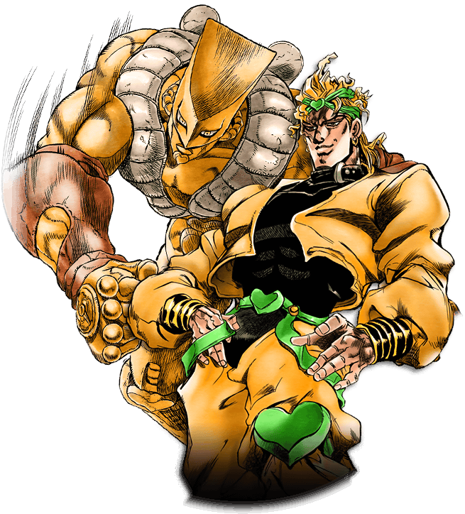
Parte 3: Stardust Crusaders
Stardust Crusaders é a terceira parte de JoJo no Kimyou na Bouken e uma das mais populares da franquia. A história acompanha Jotaro Kujo, neto de Joseph Joestar, que descobre possuir um Stand, uma manifestação espiritual com habilidades especiais. Quando Dio Brando retorna e ameaça a família Joestar, Jotaro parte em uma jornada ao lado de Joseph e outros aliados para derrotá-lo.
A aventura se desenrola em uma viagem que atravessa diversos países, do Japão ao Egito, onde o grupo enfrenta inúmeros usuários de Stand enviados por Dio. Durante a jornada, os personagens desenvolvem laços de amizade e enfrentam desafios cada vez mais difíceis, colocando à prova suas habilidades e determinação.
Publicada entre 1989 e 1992, Stardust Crusaders marcou uma grande transformação na série ao introduzir definitivamente o conceito dos Stands, que se tornaria um dos elementos mais característicos de JoJo's Bizarre Adventure. Além de apresentar alguns dos personagens mais icônicos da franquia, esta parte é considerada um dos arcos mais influentes e reconhecidos do mangá.
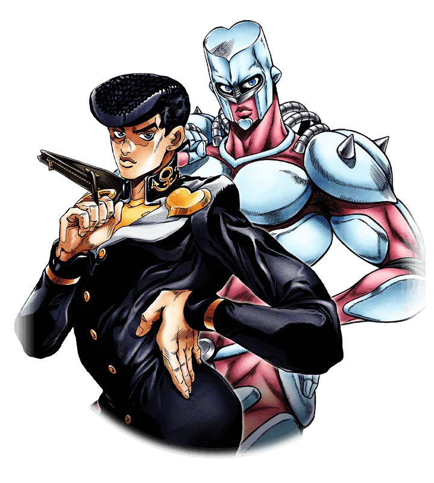
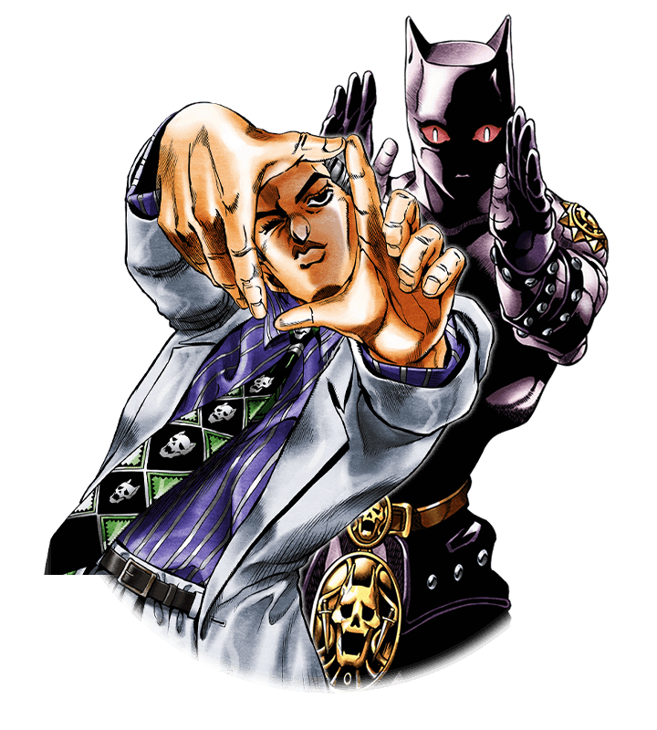
Parte 4: Diamond is Unbreakable
Diamond is Unbreakable é a quarta parte de JoJo no Kimyou na Bouken e se passa em 1999 na cidade fictícia de Morioh, no Japão. A história acompanha Josuke Higashikata, filho ilegítimo de Joseph Joestar, um estudante do ensino médio que possui o Stand Crazy Diamond, capaz de restaurar objetos e curar ferimentos.
Diferentemente da jornada global de Stardust Crusaders, esta parte concentra-se nos acontecimentos de Morioh, onde diversos usuários de Stand começam a surgir devido à influência de artefatos especiais. Ao lado de amigos e aliados, Josuke investiga os mistérios da cidade enquanto enfrenta diferentes adversários que cruzam seu caminho.
A trama ganha um novo rumo com a aparição de Yoshikage Kira, um serial killer que tenta levar uma vida aparentemente normal enquanto esconde sua identidade. A busca para detê-lo torna-se o principal conflito da história, reunindo os personagens em uma das narrativas mais elogiadas da franquia.
Publicada entre 1992 e 1995, Diamond is Unbreakable é conhecida por seu tom mais cotidiano, pelo desenvolvimento de seus personagens e pela construção detalhada de Morioh, transformando a cidade em um dos cenários mais memoráveis de JoJo's Bizarre Adventure.
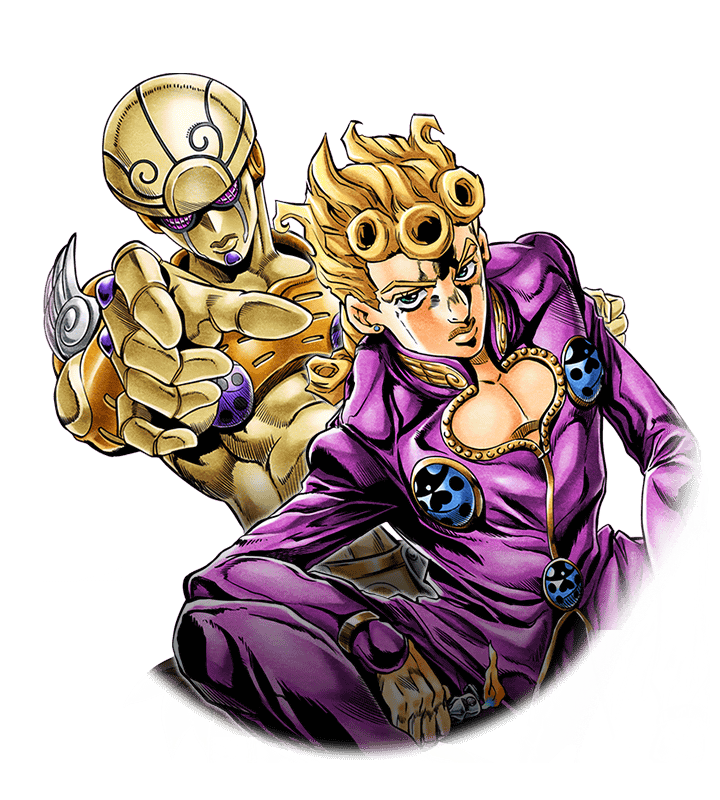
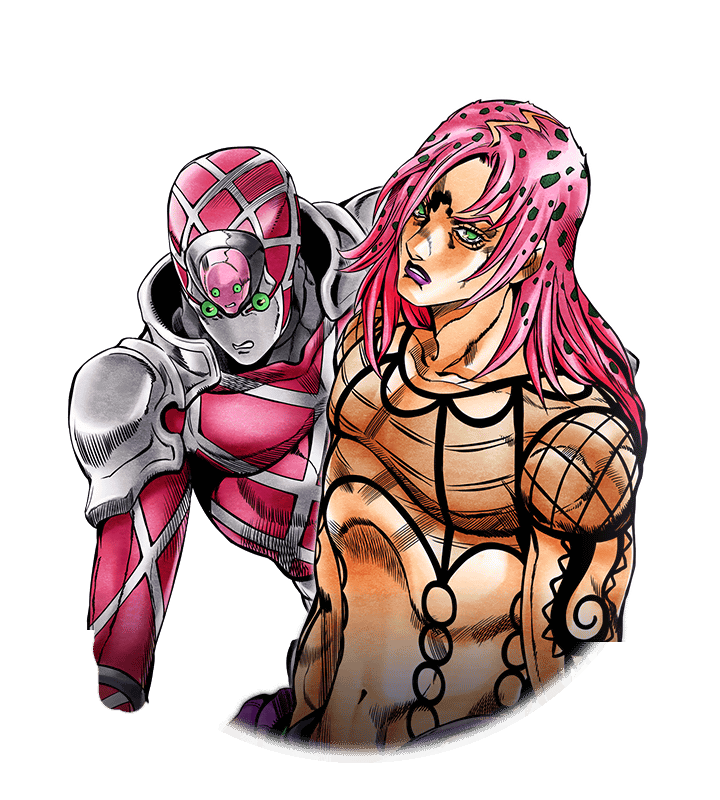
Parte 5: Golden Wind
Golden Wind (Vento Aureo) é a quinta parte de JoJo no Kimyou na Bouken e se passa na Itália, em 2001. A história acompanha Giorno Giovanna, um jovem que sonha em transformar a máfia italiana em uma organização mais justa, protegendo os inocentes e combatendo a corrupção existente dentro dela.
Para alcançar esse objetivo, Giorno ingressa na organização criminosa Passione e passa a atuar ao lado de Bruno Bucciarati e sua equipe. Ao longo da trama, o grupo enfrenta diversos usuários de Stand enquanto cumpre missões que os aproximam do líder da organização e dos segredos que cercam sua identidade.
Conhecida por suas batalhas estratégicas, personagens carismáticos e ambientação marcante, Golden Wind apresenta alguns dos Stands mais criativos da série e desenvolve temas como lealdade, determinação e sacrifício. Publicada entre 1995 e 1999, a quinta parte é considerada uma das mais populares e aclamadas de JoJo's Bizarre Adventure, destacando-se pela intensidade de sua narrativa e pelo crescimento de seus personagens ao longo da jornada.
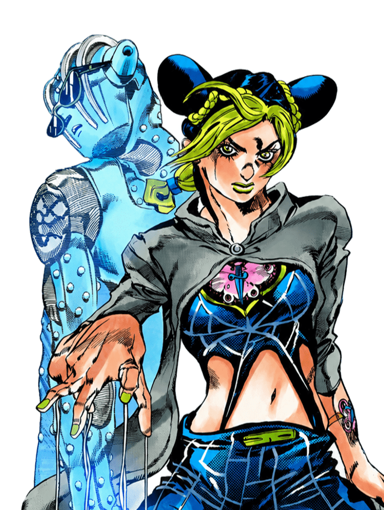
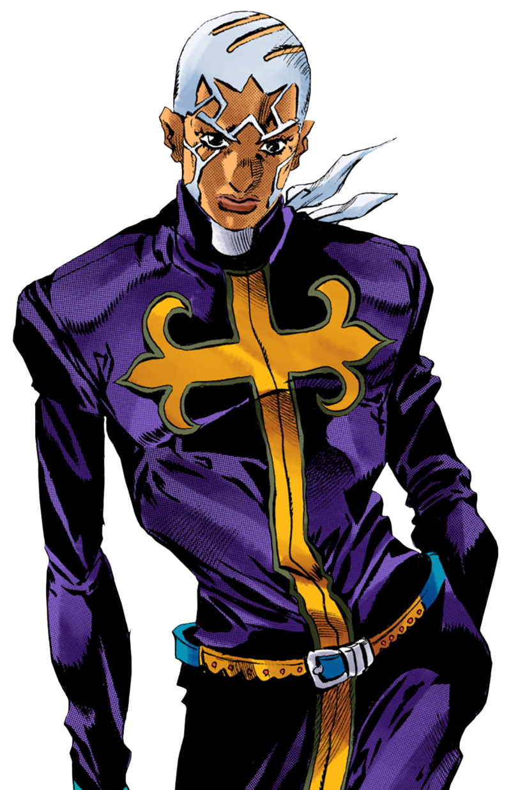
Parte 6: Stone Ocean
Stone Ocean é a sexta parte de JoJo no Kimyou na Bouken e acompanha Jolyne Cujoh, filha de Jotaro Kujo. A história se passa em 2011, na Flórida, onde Jolyne é condenada injustamente e enviada para a prisão de segurança máxima Green Dolphin Street Prison.
Dentro da prisão, Jolyne desperta seu Stand, Stone Free, e logo se vê envolvida em uma série de acontecimentos ligados a antigos planos deixados por Dio Brando. Ao lado de outros usuários de Stand, ela enfrenta diversos inimigos enquanto busca desvendar uma conspiração que ameaça não apenas sua família, mas o próprio destino do mundo.
Publicada entre 2000 e 2003, Stone Ocean é marcada por seu cenário incomum, pelo protagonismo de Jolyne e por uma narrativa que amplia significativamente a escala dos acontecimentos da série. A parte também encerra a continuidade iniciada em Phantom Blood, concluindo a história da linhagem Joestar que vinha sendo desenvolvida desde o início do mangá.
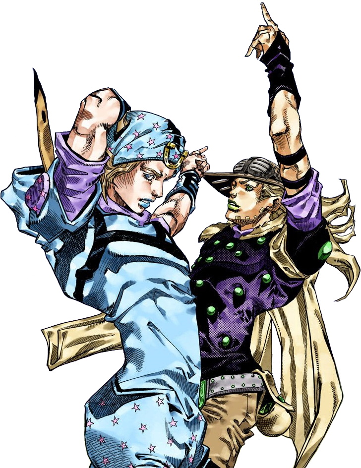
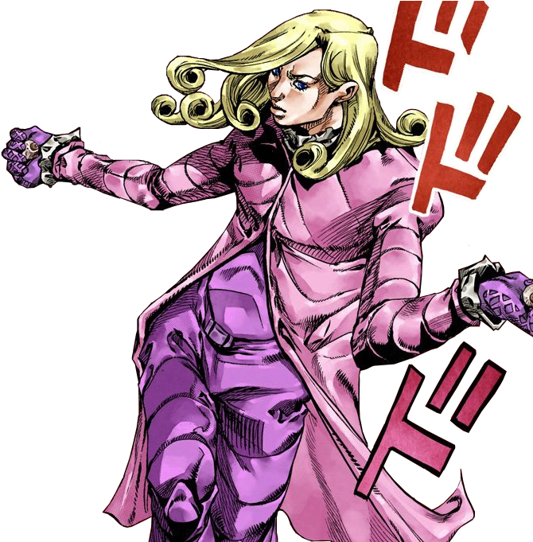
Parte 7: Steel Ball Run
Steel Ball Run é a sétima parte de JoJo no Kimyou na Bouken e marca o início de uma nova continuidade dentro da franquia. Ambientada nos Estados Unidos de 1890, a história acompanha Johnny Joestar, um ex-jóquei que perdeu os movimentos das pernas, e Gyro Zeppeli, um misterioso competidor que participa da corrida Steel Ball Run.
A trama gira em torno de uma grande corrida a cavalo que atravessa o país de costa a costa, reunindo participantes de diferentes origens e objetivos. Durante a competição, Johnny e Gyro formam uma parceria e passam a investigar os segredos por trás de estranhos artefatos espalhados pelo percurso, envolvendo-se em conflitos que vão muito além da corrida.
Publicada entre 2004 e 2011, Steel Ball Run é amplamente considerada uma das melhores partes de JoJo's Bizarre Adventure. A obra se destaca pelo desenvolvimento de seus personagens, pela profundidade de sua narrativa e pela combinação de aventura, ação e elementos históricos, apresentando uma nova versão do universo criado por Hirohiko Araki.
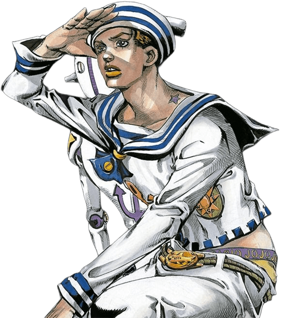
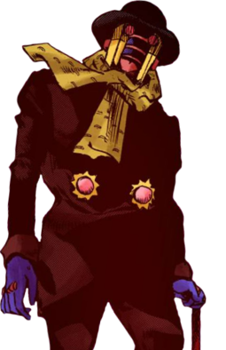
Parte 8: JoJolion
JoJolion é a oitava parte de JoJo no Kimyou na Bouken e se passa na cidade de Morioh, em uma versão alternativa do universo introduzido em Steel Ball Run. A história tem início após o terremoto e tsunami que atingiram o Japão em 2011, quando uma jovem chamada Yasuho Hirose encontra um homem sem memórias enterrado próximo aos misteriosos Wall Eyes.
Sem saber sua própria identidade, o protagonista recebe o nome de Josuke Higashikata e inicia uma jornada para descobrir seu passado e a verdade sobre sua origem. Durante essa busca, ele se envolve com a família Higashikata e com os mistérios que cercam a cidade, incluindo fenômenos sobrenaturais e conflitos relacionados a uma fruta de propriedades extraordinárias.
Publicada entre 2011 e 2021, JoJolion é uma das partes mais complexas e misteriosas da franquia, destacando-se por sua narrativa focada em investigação, pela construção gradual de seus mistérios e pelo desenvolvimento de seus personagens ao longo da história.
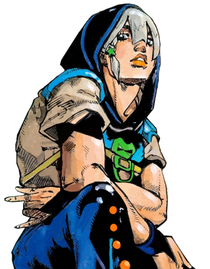
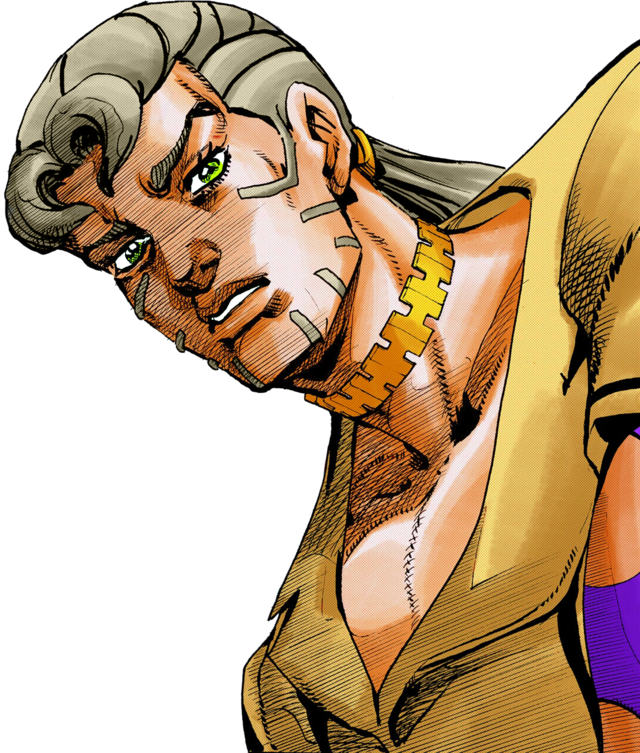
Parte 9: The JOJOLands
The JOJOLands é a nona e mais recente parte de JoJo no Kimyou na Bouken. A história se passa no Havaí e acompanha Jodio Joestar, um jovem envolvido com atividades criminosas que busca alcançar riqueza e sucesso em um mundo marcado por disputas e oportunidades.
Ao lado de seus companheiros, Jodio participa de missões que inicialmente parecem simples, mas que rapidamente o colocam em contato com pessoas, objetos e acontecimentos de grande importância. Conforme a trama avança, o grupo se vê envolvido em conflitos cada vez mais complexos, nos quais os Stands desempenham um papel central.
Iniciada em 2023 e ainda em publicação, The JOJOLands dá continuidade ao universo apresentado em Steel Ball Run e JoJolion. A obra mantém os elementos característicos da franquia, como batalhas estratégicas, habilidades criativas e personagens marcantes, enquanto desenvolve uma nova história focada nas ambições, desafios e crescimento de Jodio Joestar.